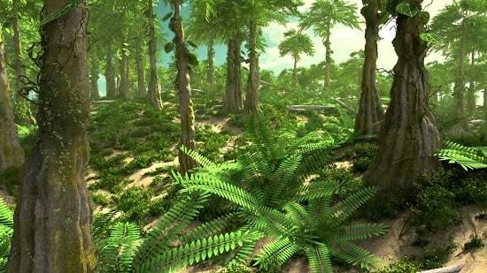
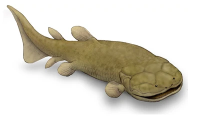
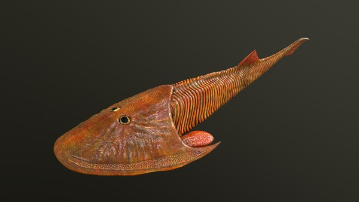

El periodo Devónico ocurrio entre 419 a 359 millones de años. Se caracteriza por la vida marina y su abundancia, aunque en este periodo también ocurrieron cosas increibles como la aparición de los primeros anfibios, artrópodos y tetrápodos.
Lamentablemente al final de este periodo ocurrió una extinción masiva en la que se vieron muy afectados los animales marinos.
La pre-historia me encanta, me encanta imaginar como serÃa estar en esa época, sobretodo me encanta el arte que sale de este tipo de épocas, cada época tiene su encanto, en este caso quiero hablar de este periodo, geografÃa, paisajes y sobretodo de los animales marinos de la época.
~~Cabe aclarar que no soy un gran conocedor del tema, simplemente deseo compartir algunas cosas que me gustan de esta época que logre encontrar en internet.~~
~Las imágenes que usaré no son de mi propiedad~
🗺️​GeografÃa🗺️
Durante el periodo Devónico, la geografÃa de la Tierra era muy diferente a la de hoy. Es impresionante la cantidad de agua que cubrÃa al planeta en esta época, como el agua se extendÃa.

Es impresionante la distribución de los continentes en este periodo y la distribución del mar en el planeta. Da esa impresión de que territorio terrestre era más pequeño que ahora.
🌳Primeros Bosques🌳
Durante el final periodo Devónico, los primeros bosques comenzaron a aparecer en la Tierra. Estos bosques estaban compuestos principalmente por plantas vasculares, como los helechos y las licófitas, que se adaptaron a la vida terrestre.
Quiero hacer una pausa en este apartado pues me fascina el arte de bosques de este periodo, hay ilustraciones que se ven tan increibles, se sienten alienÃgenas, me encantan.
Esta ilustración me encanta, de primeras me encantan los atardeceres, por lo que agregar a un atardecer un escenario asà me deja loco. Me encanta como es representada la vegetación de esta época, como ya dije antes, se siente alienÃgena.
Me encantarÃa poder viajar a esta época y caminar por los alrededores sin que nada pueda afectarme ni que yo pueda afectar.

🏝️Vida Terrestre🏝️
Antes de pasar a lo que más llama la atención (vida marina) me gustarÃa hacer una pequeña recopilación sobre la vida terrestre ya que no suele ser muy explorada.
🔎​ICHTHYOSTEGA
PodÃa estar tanto en Tierra como en agua (aunque los más seguro es que vivia en agua), tenÃan esta apariencia de reptil, como si fuera un cocodrilo pequeño y primitivo.
🔎ACANTHOSTEGA
Al parecer tiene muchas similitudes con ICHTHYOSTEGA y puede confundirse, sin embargo, son diferentes. No pude encontrar muchas fotos ya que la mayorÃa son de ICHTHYOSTEGA.
🐟Vida Marina🐟
Sin duda esta es una de las partes más interesantes y fascinantes, en lo personal me encanta todo sobre la vida marina, es interesante, un poco aterrador e intrigante. Imaginar nadar en los mares del devónico me aterra y fascina por igual. De por si pensar en el mar actual ya me provoca esos sentimientos. Las ilustraciones que hay de estos mares, de peces en medio de esos oscuros mares. Recordemos que el mar era mucho más extenso en esa época.
🔎STETHACANTHUS
Parecidos a tiburones, lo que más llama la atención es la cresta que posee. Al parecer esa cresta podÃa ser para cortejo o para defensa.
🔎GOGONASUS
Por lo visto este pez no era muy grande, sin embargo si que posee una apariencia atemorizante. En la primera ilustración me llama mucho la atención la forma de sus ojos y esa capa que los rodea. Parece una anguila eléctrica.
🔎LACCOGNATHUS
Algo sorprendente de este pez es que podÃa llegar a crecer 1 a 2 metros de largo, lo que es bastante, de los peces más grandes de la lista. Honestamente en las ilustraciones no se ve taan aterrador como otros peces, aún asà tiene su encanto. Me recuerda de cierto modo a un tiburón ballena si tuviera la boca cerrada.
MENCIONES ESPECIALES
Me gustarÃa hacer una pausa para mencionar a algunos animales que se ven geniales, se ven más "alienÃgenas" que el resto, no voy a describirlos, solo presentarlos con ilustraciones.
🔎CEPHALASPIS
Este pez es una locura, se ve super diferente a lo que uno se acostumbra a ver.
🔎BRONTOSCORPIO
Este me da cosas, el aspecto es inquietante y además era muy grande un elefante comparado a los escorpiones actuales.
🔎JAEKELOPTERUS
Increible lo grande que era este animal.

🔎DUNKLEOSTEUS
Para terminar aquà está el animal más popular de este periodo, el DUNKLEOSTEUS. Tan solo con ver su apariencia uno entiende porque es el que más resalta. Es aterrador, intimidante e imaginar estar nadando en medio del mar (ya de por si eso me aterra) y pensar que este pez esté nadando por los alrededores me hiela la sangre. Es aterrador lo grande que era.

🦈​Conclusión🦈​
Esta época del planeta es impresionante, las otras épocas de la Tierra también lo son, espero poder realizar más "mini-blogs" sobre cada uno de los periodos de la Tierra. Me fascina todo lo que tiene que ver con animales, sobretodo marinos y aún más sobre animales pre-historicos.
Gracias por leer.